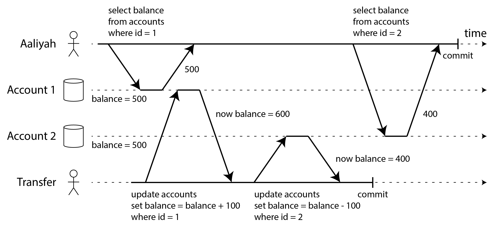
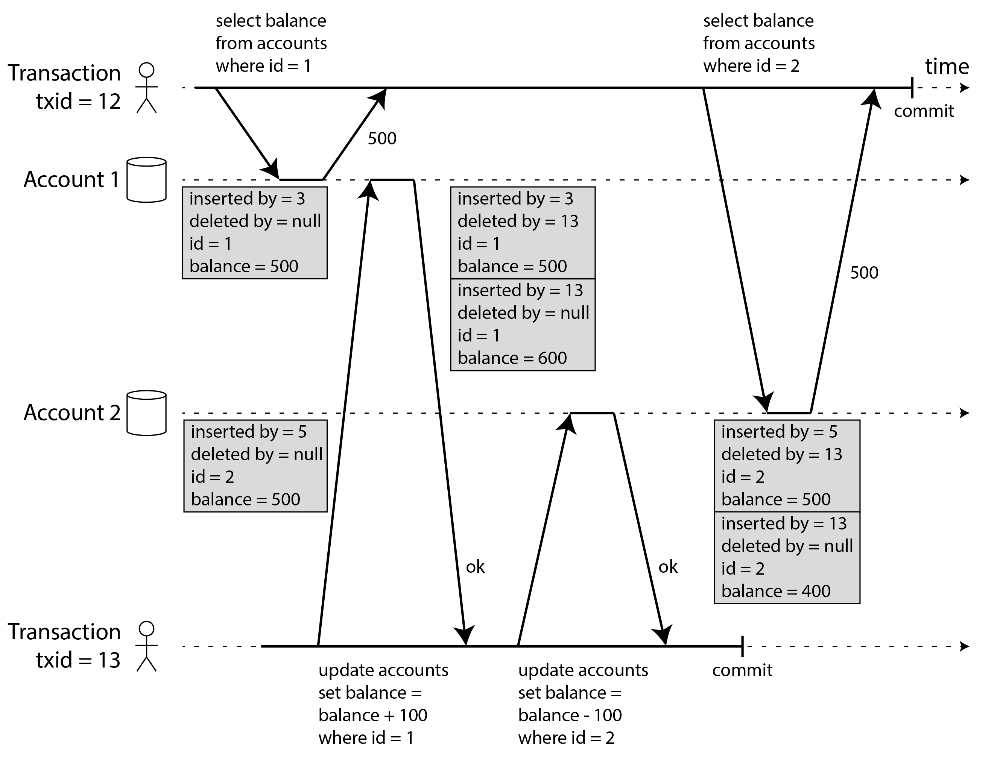
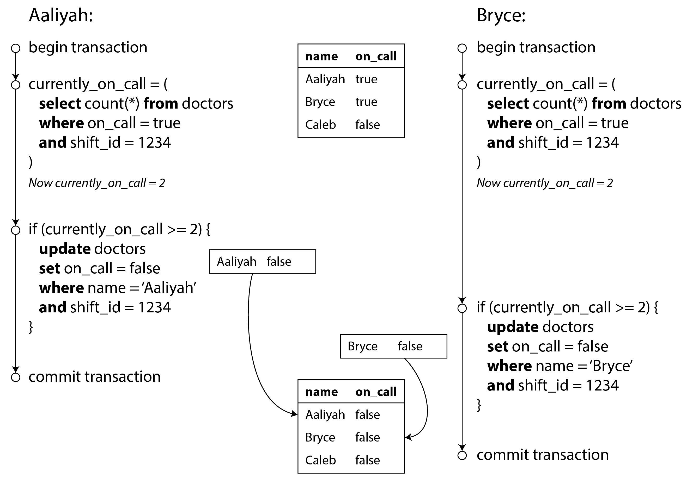
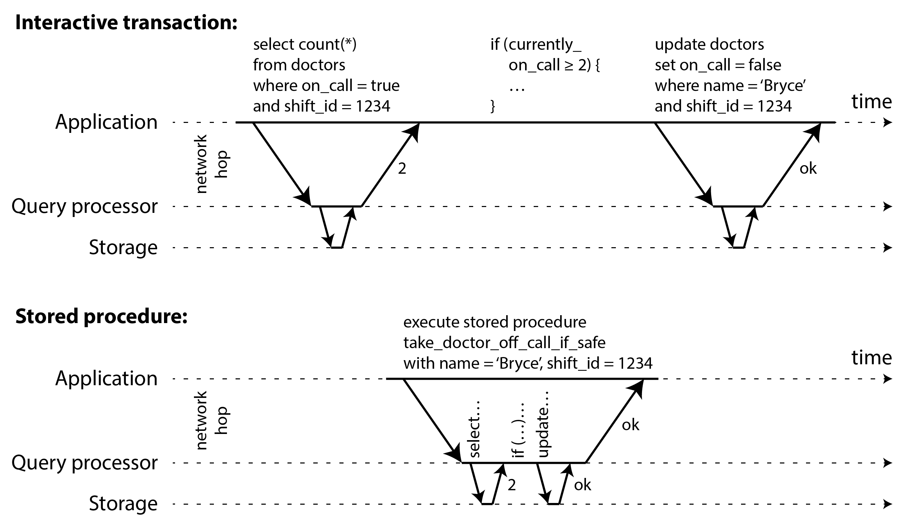
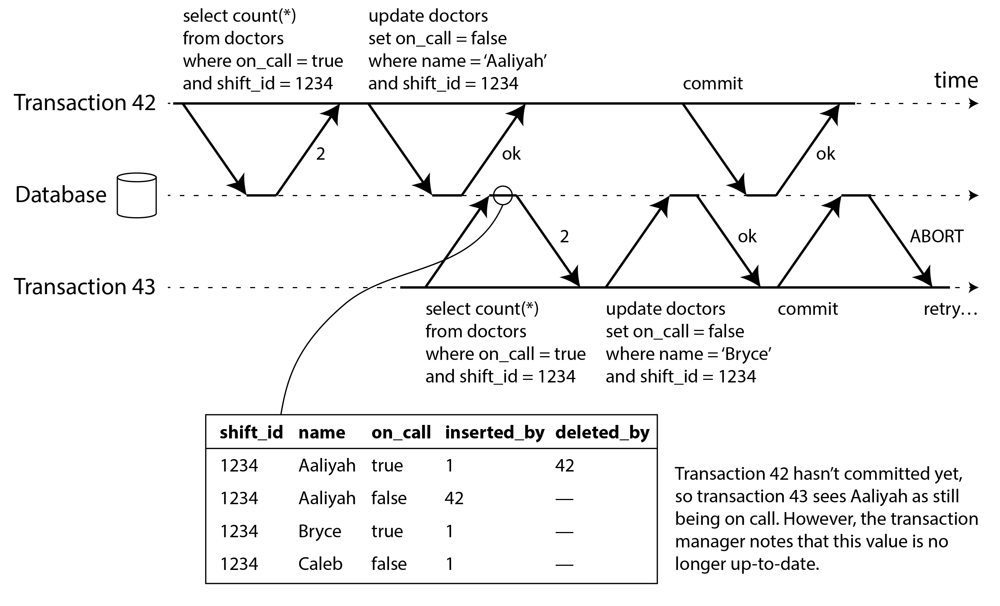
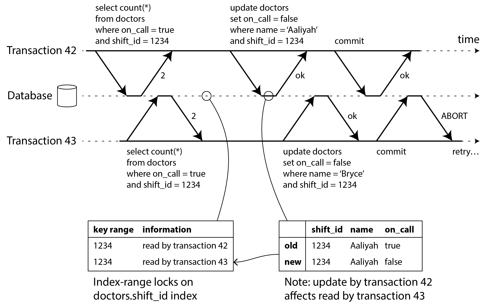

术语表 · 第 8 章 · 课程 8 / 14
事务
这一章最容易被读成一张隔离级别对照表，那样就白读了。正确的读法是把异常当成主体、把级别当成答案：每一个隔离级别存在的唯一理由，是它挡住了某一个具体的竞态条件，而它没挡住的那些，才是你在评审会上真正会被人问住的地方。
有些作者声称，通用的两阶段提交代价太高，会带来性能或可用性问题。我们认为，与其让应用程序员始终为缺少事务而另想办法，不如等事务被过度使用并形成瓶颈时，再由他们处理相应的性能问题。
James Corbett 等人，《Spanner：Google 的全球分布式数据库》（2012）
8.1事务在替你挡什么，以及 ACID 里那个 C 在骗你
把场景钉死。你在写一个转账接口：从 A 账户扣 100，给 B 账户加 100。两条 UPDATE 之间，进程可能崩、网络可能断、磁盘可能满、另一个请求可能正在读这两个账户。如果中间失败而第一条已经生效，钱就凭空消失了。事务的存在就是为了让这四条语句变成一个要么全做、要么全不做的逻辑单元，失败时可以安全重试。
但事务真正值钱的地方不是「原子性」，而是它简化了应用编程模型：有了它，你不需要为每一种部分失效写一套补偿逻辑。这也是书里那句引用 Spanner 团队的话要说的意思：把复杂度推给数据库，比让每个业务程序员自己想清楚「万一半路挂了怎么办」要便宜。
ACID 四个字母，教科书里写得像公理，实际上只有三个能当承诺用。
| 字母 | 承诺什么 | 能不能当承诺用 |
|---|---|---|
| A 原子性 | 事务中途失败，之前所有写入全部撤销；应用可以安全重试 | 能。书里说它叫「可中止性」（abortability）更贴切 |
| C 一致性 | 事务前后，应用定义的不变式（invariant）都成立 | 不能。这是应用的职责，不是数据库的属性 |
| I 隔离性 | 并发事务互不干扰，效果等价于串行执行 | 能，但要看它实现的是哪一档（这是本章全部内容） |
| D 持久性 | 提交成功的数据不会丢，即使崩溃 | 能，但要问清楚「不丢」的边界是单机磁盘还是 N 个副本 |
那个 C 值得多说两句，因为它是评审里最常被误用的一条。「一致性」在数据库语境下至少有五种不同含义：副本一致性、一致快照、一致性哈希、CAP 里的线性一致性、以及 ACID 里这个「应用定义的良好状态」。ACID 的 C 说的是最后一种：账目借贷相抵、库存不为负。而数据库只能强制你能声明成约束的那些：外键、唯一性、检查约束。像「同一班次至少一名医生值班」这种跨行的不变式，数据库根本没地方声明，于是 C 就退化成了「应用别写错」。
第一条判据：听到「我们是 ACID 数据库所以没问题」，要追问的是 I 和 D：A 和 C 在分布式场景里几乎从不是瓶颈。ACID 不是等级，是一份合同，合同条款得逐条看。
8.2读已提交：只挡住了最脏的那两种
读已提交（read committed）是 Oracle、PostgreSQL、SQL Server 的默认级别，也是绝大多数业务系统实际运行的那一档。它只给两条保证：
- 没有脏读（dirty read）：读不到别人未提交的写入。
- 没有脏写（dirty write）：不会覆盖别人未提交的写入。
这两条挡住的都是「看到半成品」这一类事故。书里那个二手车网站的例子很典型：Aaliyah 和 Bryce 同时买同一辆车，买车涉及两次写入（更新商品信息、开发票）。如果允许脏写，可能车卖给了 Bryce、发票却开给了 Aaliyah，两个事务的写入混在了一起。读已提交能挡住这个。
但它挡不住一个更常见、更隐蔽的问题：同一个事务里两次读，读到了不同的世界。

这个异常叫读偏差（read skew），是不可重复读的一种。关键在于：Aaliyah 读到每个余额的那一刻，那些值确实是已提交的。读已提交没有违约：它承诺的只是「不读脏数据」，不是「读到一个一致的截面」。
什么时候这不能忍？书里给了两个真实场景，都不是「用户刷新一下就好」：
- 备份：备份大库要几小时，期间数据库继续接受写入。备份的一部分是旧版本、一部分是新版本，从这样的备份恢复，「暂时的不一致」就被固化成了永久的不一致，凭空消失的 100 美元永远回不来了。
- 分析查询与完整性检查：扫描大半个库的查询如果跨了不同时间点，返回的结果没有意义。你以为在查「坏账总额」，实际在查两个时刻的混合体。
实现方式决定了它为什么会在这里漏
读已提交防脏写的主力是行级锁：改一行就先拿这一行的锁，持有到事务结束。防脏读则不能用同一把锁，否则一个慢写事务会把所有只读事务堵住，一个慢查询能拖垮整个应用。所以主流做法是：每行保留两个版本，旧的已提交值 + 持锁事务写入的新值，读者拿旧值。
这个「保留旧版本」的小技巧一旦推广开，就是整章的技术主线：既然能留两个版本，为什么不多留几个？
8.3快照隔离：让事务看到「自己开始那一刻的数据库」
快照隔离（snapshot isolation）的核心思想一句话：每个事务都从一个一致快照读取，只看到它开始时已经提交的全部数据，之后别人怎么改都看不见。它消除了读偏差、不可重复读、以及只读查询里的幻读。
它也是「可重复读」在很多数据库里的真实实现（PostgreSQL、InnoDB、Oracle、SQL Server 都有变体）。这里有个必须记住的坑：「可重复读」这个名字在不同数据库里含义完全不同，有的指快照隔离，有的指更弱的级别。名字不可信，行为才可信。
MVCC：版本链是怎么长出来的
如果你有 C/C++ 背景，MVCC 其实就是给每行加了一对可见性标记，本质是一个无锁读的多版本链表。PostgreSQL 的做法（图 8-7）值得完整走一遍，因为它解释了大量运维现象：

- 每个事务开始时拿一个唯一、单调递增的
txid。PostgreSQL 里它是 32 位整数，约 40 亿个事务后会回绕，靠vacuum进程兜底。 - 每行有
inserted_by和初始为空的deleted_by。删除不是物理删除，只是把deleted_by设为请求删除的 txid。 - 更新在内部 = 一次删除 + 一次插入。余额从 500 改成 400，表里实际有两行：500 那行被标记删除，400 那行是新插入的。
- 同一行的所有版本在堆里组成链表，可以从新到旧遍历。
可见性规则是三条，值得背下来，因为它们解释了「为什么我的查询看不到刚提交的数据」这类灵异问题：
- 事务开始时列出所有仍在进行的事务；这些事务后来即使提交了，写入也一律忽略。
- txid 更晚的事务（即本事务开始后才启动的）写入一律忽略，无论提交没有。
- 已中止事务的写入一律忽略。所以中止后不需要立刻物理清理，可见性规则会过滤掉，垃圾回收稍后处理。
由此得到快照隔离最重要的性能性质：读不阻塞写，写不阻塞读。这是它和两阶段锁定的分水岭，也是它为什么在只读密集负载上表现好。代价在后面：你会在 8.5 节看到，这条性质也意味着没有任何东西在阻止两个事务基于同一个旧快照做出互相矛盾的决策。
8.4丢失更新：读—改—写循环的六种修法
快照隔离解决了读的一致性问题，但基本没管两个事务同时写。第一个要处理的异常是丢失更新（lost update）：两个事务读到同一个旧值、各自算出新值写回，后写的把前一个的更新抹掉了。经典形态是计数器自增，以及任何「读出来、改一改、写回去」的代码。
修法有六种，选哪种是设计决策，不是风格偏好：
| 手段 | 怎么做 | 代价 / 什么时候别用 |
|---|---|---|
| 原子写操作 | UPDATE counters SET value = value + 1 WHERE key='foo' | 首选。但要求业务逻辑能表达成一条语句；ORM 很容易让你无意中写出不安全的循环 |
| 显式锁定 | SELECT … FOR UPDATE 再改 | 逻辑复杂（校验走法、规则判定）时的通用解；会引入死锁，且容易漏锁 |
| 自动检测 | 数据库发现冲突就中止一个，应用重试 | PostgreSQL 可重复读、Oracle 可串行化、SQL Server 快照隔离会做；MySQL/InnoDB 的可重复读不做 |
| 条件写入 / CAS | UPDATE … WHERE version = 7，或 WHERE content = 'old' | 无事务数据库的常用解；要检查影响行数并重试 |
| 冲突解决（复制库） | 允许产生兄弟值，事后合并 | 只在操作可交换时成立（自增、集合添加）；LWW 会丢更新 |
| 可串行化 | 让数据库替你判断 | 最省心，性能代价见 8.6 |
第三行那个 MySQL 的差异值得单独记：书里提到有些作者认为，只有能防止丢失更新，才算提供了快照隔离。按这个定义，MySQL/InnoDB 的可重复读并不提供快照隔离。这不是学术洁癖：如果你把「用了可重复读」当成「并发安全了」，迁移到 MySQL 上就会实打实丢数据。
还有一个必须知道的边界：锁和 CAS 都假定存在唯一的最新副本。在多主复制或无主复制里，多个节点可以各自接受写入，没有唯一最新值，这两类手段根本不适用，只能退到「允许冲突 + 事后合并」，而合并只在可交换操作上安全。这就是第 6 章那些 CRDT 的现实来源。
8.5写偏斜：行级冲突检测永远抓不到的那一类
前面所有异常都有个共同点：冲突发生在同一个对象上。脏写是同行、丢失更新也是同行。于是很多人形成了一条直觉：「只要有行锁，并发就安全了」。这条直觉在写偏斜面前会碎掉。
场景：你在写医院值班系统。底线是每个班次至少一名医生值班。某个班次只有 Aaliyah 和 Bryce 两人，两人都病了，几乎同时点了「退出值班」。接下来的事如图 8-8：

每个事务先查「现在有几个人值班」，得到 2，判断「我退出是安全的」，然后更新自己那一行。两个事务更新的是不同的行（Aaliyah 的行和 Bryce 的行），所以任何行级写冲突检测都看不到冲突。两个事务都成功提交，结果零人值班，违反了一条业务不变式。
这种异常称为写偏差（write skew）。它既不是脏写，也不是丢失更新，因为两个事务更新的是不同对象——分别是 Aaliyah 和 Bryce 的值班记录。这里的冲突不那么明显，却确实是一种竞态条件：如果两个事务依次运行，第二位医生就无法退出值班。只有并发执行事务，才会出现这种异常行为。
可以把写偏差看作丢失更新的推广：两个事务读取相同的一组对象，随后各自更新其中一些对象（不同事务可以更新不同对象），就可能发生写偏差。若不同事务碰巧更新同一个对象，则会表现为脏写或丢失更新，具体取决于时序。
然后书里列了「为什么各种现成手段都救不了它」，这一段是整章最该背的：
- 单对象原子操作无济于事，这里涉及多个对象。
- 自动检测丢失更新也无济于事：PostgreSQL 可重复读、MySQL/InnoDB 可重复读、Oracle 可串行化、SQL Server 快照隔离，都不会自动检测写偏斜。
- 约束大多表达不了：「至少一名医生值班」是跨行约束，很少有数据库内置支持，只能用触发器或物化视图凑。
- 唯一有效的两条路：真正的可串行化隔离，或者显式锁住事务依赖的那些行（
SELECT … FOR UPDATE）。
它在真实系统里长什么样
书里给了四个例子，每一个都值得对照自己的代码看一眼：
| 场景 | 不变式 | 为什么行锁抓不到 |
|---|---|---|
| 会议室预订 | 同一房间同时段不能重复预订 | 检查的是「没有重叠预订」，插入的是一行还不存在的数据——没有行可以锁 |
| 账户双写 / 防重复消费 | 支出总额不超过余额 | 两个支出项并发插入，各自看余额都是正的，合起来变负 |
| 用户名占用 | 用户名全局唯一 | 这个能被唯一性约束救——是例外，不是通例 |
| 多人游戏 | 棋子不能移到已被占用的格 | 可以锁同一个棋子，但锁不住「目标格是否已被别人移入」 |
后三个例子的共同结构是：步骤 1 的查询检查「不存在符合条件的行」，步骤 3 的写入却「添加了这样一行」。这有个专门的名字：幻读（phantom）。快照隔离能消除只读查询里的幻读，但在读写事务里，幻读正是写偏斜的温床。而且这里 SELECT FOR UPDATE 也没用：查询返回零行，你无处加锁。
书里给了一个「实在没别的办法时」的补丁，叫物化冲突（materializing conflicts）：提前建一张「房间 × 15 分钟时段」的表，把未来六个月的组合全部预生成，预订时先 SELECT FOR UPDATE 锁住对应的那几行，幻读就被转化成了行锁冲突。书里的评价很直接：难设计、易出错、把并发控制机制渗进了应用数据模型，只能当最后手段。
反例：用「快照隔离 + 一个检查」实现的值班轮换，在凌晨三点放走了所有人
值班系统要求「每个班次至少一人」。退出值班接口的实现是：BEGIN → 查本班次 on_call = true 的人数和名单 → 若 count > 1 则 UPDATE doctors SET on_call = false WHERE id = ? → COMMIT。开发者在文档里写着「已使用事务，且在事务内检查了人数，安全」。代码在 PostgreSQL 的可重复读（即快照隔离）下运行。
两个事务的读都发生在彼此提交之前，各自快照里都看到 2 人；写的是不同的两行，行级冲突检测没有任何可报的冲突；PostgreSQL 的可重复读不检测写偏斜。两个事务都提交成功，班次变成 0 人。更糟的是这个 bug 有极强的伪装性：单测永远通过（单线程），压测也大概率通过（要求两个请求落在几十毫秒的同一窗口内），只在真实的并发尖峰里出现。而且它不会报错：数据库认为一切正常，是业务不变式被破坏了。
正确的修法有两条，选哪条取决于你愿意付哪种代价：
- 锁住依赖的那个集合：把检查改成
SELECT … FROM doctors WHERE on_call = true AND shift_id = 1234 FOR UPDATE，锁住这个班次所有在班医生，把冲突从「幻读」降级成「行锁」。代价是同一班次的退出操作串行化，死锁风险上升，且必须保证以后每个写路径都记得加这把锁。 - 升到可串行化：PostgreSQL 的
SERIALIZABLE（SSI）会检测到这个读写依赖环，中止其中一个事务，应用重试。代价是重试逻辑必须真的写上，见 8.6。
还有一个更彻底的方案：把「至少一人」做成数据库能强制的形式。比如单独一行「班次登记表」，退出值班时对这一行做条件更新（UPDATE shift SET on_call_count = on_call_count - 1 WHERE id = 1234 AND on_call_count > 1），影响行数为 0 就拒绝。这样不变式被压到了单行上，行级机制终于看得见它了。
8.6可串行化：三种实现，三种代价
可串行化只有一个承诺：并发执行的结果，等价于按某个串行顺序执行。只要事务单独跑是对的，并发跑也是对的，数据库负责挡住所有竞态条件。问题是这句话的三种实现方式，代价差得很远。
实现一：实际串行执行
最粗暴的办法是单线程，一次跑一个事务。它绕开了所有冲突检测，隔离性按定义成立。这事在 2000 年代才被认为可行，靠两个前提：RAM 便宜到能把活跃数据集全放进内存，以及OLTP 事务通常很短。
但有个致命细节：单线程系统不能允许交互式多语句事务。因为交互式事务大部分时间在等应用发下一条语句，单线程下吞吐量会低得可怕。所以这类系统（VoltDB、Redis、Datomic）要求你把整个事务写成存储过程提交给数据库，一次执行完，全程不等网络。

存储过程的名声不好是有原因的：各家私有语言（PL/SQL、T-SQL、PL/pgSQL）生态落后、难调试、难做版本控制、难接监控；而且数据库实例被多个应用共享，一个写得烂的存储过程比应用服务器上同样烂的代码危害大得多。现代实现改用了通用语言（VoltDB 用 Java/Groovy，Redis 用 Lua，MongoDB 用 JavaScript），这个问题缓解了不少。
天花板在哪里：吞吐量受限于单个 CPU 核。要扩展只能分片，而一旦事务跨分片就必须协调。书里给了个具体数字：VoltDB 的跨分片写入吞吐约 每秒 1,000 次，比单分片低几个数量级，而且加机器也提不上去。这个数字值得记住，因为很多「我们分片了就线性扩展了」的乐观估计，就是在这里失效的。
实现二：两阶段锁定（2PL）
三十年间唯一被广泛使用的可串行化算法。规则比读已提交的锁严格得多：
- 读对象要先拿共享锁，多个事务可以同时持有。
- 写对象要先拿独占锁，此时别人以任何模式都不能持锁。
- 读写可以升级。拿到锁必须持有到事务结束，这才是「两阶段」的含义：执行期获取，结束时一次性释放。
关键差别一句话：快照隔离是「读不阻塞写、写不阻塞读」，2PL 是读写互相阻塞。这一条就决定了它的性能画像。
两阶段锁定最大的缺点，也是它自 20 世纪 70 年代以来始终没有普及到所有数据库的原因，就是性能：在两阶段锁定下，事务吞吐量和查询响应时间都明显逊于弱隔离。
这部分源于获取和释放大量锁的开销，更主要的原因则是并发度降低。按照设计，只要两个并发事务执行的操作有任何可能引发竞态条件，其中一个就必须等另一个完成。
因此，采用 2PL 的数据库延迟可能相当不稳定；工作负载一旦存在争用，高百分位延迟就可能非常糟糕。仅仅一个慢事务，或者一个访问大量数据、取得许多锁的事务，就可能让系统其余部分陷入停顿。
最后那句是运维层面的灾难：一个需要读整张表的事务（备份、分析、完整性检查）要拿全表共享锁，在它读完之前所有写都被阻塞。大表读几小时，数据库就几小时不能写。
2PL 还必须解决幻读，靠的是谓词锁（predicate lock，锁住「所有符合某条件的对象」，包括还不存在的），但谓词锁性能太差，实际实现用的是它的近似：索引范围锁（index-range lock / next-key locking）。把谓词放宽成「123 房间全天的预订」或「中午 12 点到 1 点所有房间的预订」，安全但更粗。没有合适索引可挂时，数据库会退化成锁整张表。这解释了一个常见现象：同样的可串行化业务，加了索引之后锁争用突然好很多。
还有一句必须记住的区分：2PL ≠ 2PC。两阶段锁定提供可串行化隔离，两阶段提交提供分布式原子提交。名字像，毫无关系，混淆它们的人在评审里一眼就能被看出来。
实现三：可串行化快照隔离（SSI）
2008 年才提出，思路是乐观的：不阻塞，先跑，提交时检查有没有出问题，出了就中止重试。它建在快照隔离之上，只额外做一件事：检测「事务是否基于过时的前提做了决策」。
两种要检测的情况，对应两张图：


- 读过时的 MVCC 值：读取时因可见性规则忽略了某些未提交写入，提交前检查这些写入是否已提交。是，则中止。
- 写入影响了别人的读取：记录每个事务读过哪些索引项（或表级），写事务去查「近期有谁读过我改的范围」，给它们发通知。这不是锁，是警戒线：不阻塞，只通知。
注意一个精妙的设计选择：为什么不在发现过时读时立刻中止？因为只读事务不会造成写偏斜，而读取的那一刻数据库还不知道它后面会不会写；而且对方事务也可能最终中止。等到提交再判断，能避免大量不必要的中止，这正是 SSI 保留「长期只读查询」这个优点的原因。
SSI 的代价集中在一个词上：中止率。有严重争用时，很大比例的事务会被中止并重试，重试本身又加重负载，形成重试风暴。所以 SSI 要求读写事务足够短小（长期只读事务没问题）。但比起 2PL，它有个明显优势：慢事务不会拖垮别人，只读查询可以在快照上无锁跑。
三者的对照，这就是该背下来的表：
| 实现 | 怎么挡竞态 | 主要代价 | 什么时候选它 |
|---|---|---|---|
| 串行执行 | 根本不并发 | 单核吞吐天花板；跨分片事务吞吐掉几个数量级；被迫用存储过程 | 活跃数据集在内存、事务极短、能单分片、写入吞吐不高 |
| 2PL | 读写互相阻塞，持锁到结束 | 排队与死锁；尾延迟极不稳定；一个慢事务拖垮全库 | 争用低但正确性要求绝对；不能接受重试的业务 |
| SSI | 不阻塞，提交时检测冲突并中止 | 误判与重试风暴；读写事务必须短 | 读多写少、有余量、能接受重试（PostgreSQL / CockroachDB / FoundationDB 的默认） |
第二条判据：「要不要可串行化」不是纯粹的性能题，而是重试题：乐观方案把成本从「等待」换成了「重做」。如果你的写路径不能安全重试（发了短信、扣了库存但没记幂等键），那 SSI 给你的不是性能，是一堆重复副作用。
8.7面试里怎么答
问：「你们的订单服务用了事务，讲讲隔离级别怎么选的，为什么不用可串行化？」
「我们按异常来选，不按级别名字选，因为『可重复读』在不同库里行为都不一样。核心下单路径跑在读已提交上——它挡脏读脏写够用了，扣库存走的是单条
UPDATE … WHERE stock >= n，属于原子写，不会丢更新。但我们识别出三处写偏斜风险：优惠券的「每人限领一张」检查后插入、会议室的时段重叠检查、以及账户余额的支出校验。这三处的共同点是读集合和写集合不重叠，行锁和唯一索引都抓不到，所以我们把这三条路径单独放在SERIALIZABLE（PostgreSQL 的 SSI）下，代码里带上了完整的中止重试。不整体上可串行化的原因是代价的形状：2PL 会让一个读大表的报表事务把整库写阻塞住，尾延迟直接失控；SSI 不会阻塞，但争用高时中止率上升，重试会放大负载。我们实测过高争用下 SSI 的重试把 P99 从个位数毫秒推到了几十毫秒——所以我宁可只在三处必要时付这个钱。
另外还有一条硬约束：所有写路径必须能安全重试。发短信、调第三方下单这类不可重试的副作用，全部挪到事务提交之后，用幂等键兜底。」
这段话的三个支点都能被追问：为什么读已提交够用（单语句原子写）、写偏斜为什么不靠行锁（读集合与写集合交叉）、为什么不全量上可串行化（代价的形状是尾延迟与重试，不是平均值）。被追问「你怎么知道哪三处有风险」，答案是扫描所有「先 SELECT 判断、再 INSERT/UPDATE」的代码路径。这是可以机械执行的一条检查，不是靠直觉。
练习这是哪一种异常，该用哪一档
五段代码。判断的关键不是「用哪个隔离级别」，而是先认出冲突发生在哪里：同一行？不同行但读了同一段？还是一行都还没存在？
两个事务都执行 SELECT balance FROM accounts WHERE id = 1，各自加 100，再 UPDATE … SET balance = ?。跑在快照隔离下。
两个事务读同一个旧值、写回同一行，后写的抹掉前一个——这是丢失更新的教科书形态。修法首选原子写（SET balance = balance + 100）；或者用 CAS 带版本号；或者依赖数据库的自动检测（PostgreSQL 可重复读会中止，MySQL/InnoDB 的可重复读不会）。注意它不是写偏斜：写偏斜的两个事务写的是不同行。
事务先 SELECT COUNT(*) FROM bookings WHERE room_id = 123 AND …重叠…，返回 0 就 INSERT 一条新预订。跑在快照隔离下，room_id 上有索引。
检查的是「不存在满足条件的行」，插入的正是这样一行——这是幻读引发的写偏斜。SELECT … FOR UPDATE 在这里没用，因为查询返回零行，无处加锁。索引本身不提供保护，只有可串行化（2PL 的索引范围锁，或 SSI 的读写依赖检测）才行。实在不能上可串行化时的补丁是物化冲突：预建「房间 × 时段」表，先锁行再插入。
一个事务在读账户余额做备份，另一个事务正在两个账户之间转账。备份脚本跑在读已提交下，读到账户 1 是 500、账户 2 是 400。
两个余额都是已提交的，所以不是脏读——读已提交没有违约。问题是它们来自不同的时间点，500 + 400 = 900，100 美元在备份里永久消失。修法是快照隔离（一致快照），让整个备份读到同一时刻的状态。备份和分析查询是这类异常最典型的受害者，因为它们不能「刷新一下就好」。
服务用 PostgreSQL 的 SERIALIZABLE，压测时发现 P99 从 8ms 涨到 60ms，日志里有大量 could not serialize access due to read/write dependencies，错误率约 4%。
SSI 是乐观的：它不阻塞，靠中止+重试保证正确。4% 的中止率说明存在真实的读写依赖环——可能事务太长（跨了多次外部调用）、或热点键争用严重。正确动作是缩短事务、把只读部分挪出事务、只对真正需要可串行化的路径开这一档；盲目换 2PL 会把「可重试的失败」换成「不可控的等待」。加机器对中止率无效，因为冲突是逻辑上的。
代码里做「读出来 → 改一个字段 → 整行写回」，跑在 MySQL/InnoDB 的可重复读下。团队认为可重复读 = 快照隔离 = 并发安全。
书里明确写了：MySQL/InnoDB 的可重复读不会自动检测丢失更新，而 PostgreSQL 的可重复读、Oracle 的可串行化、SQL Server 的快照隔离会。按「只有能防止丢失更新才算快照隔离」的定义，InnoDB 并没有提供快照隔离。修法是把读—改—写换成原子语句、SELECT FOR UPDATE、或带版本号的 CAS。
贴进架构评审文档的话：「本系统按异常而非级别名称选隔离：默认读已提交，所有计数/余额类更新必须使用单语句原子写或带版本号的 CAS，禁止裸的读—改—写循环；识别出 N 处写偏斜风险点（读集合与写集合不交叉，行锁与唯一索引均无法覆盖），这些路径单独运行在可串行化（SSI）下并实现完整的中止重试。明确放弃全局 2PL，因为它会让大范围只读事务阻塞全库写入，尾延迟不可接受。所有写路径必须具备可重试性——不可重试的外部副作用（发短信、第三方下单）一律移到提交之后并配幂等键。已知限制：SSI 在热点争用下中止率上升，需要监控重试率作为一等指标。」
一手资源
第 8 章 事务（中文全译） — 优先读三节：「弱隔离级别」里读已提交与快照隔离的对比、「写偏差与幻读」（那一节把「为什么行锁抓不到」讲得最清楚）、以及「可串行化」三种实现各自的性能小节。另外别错过两个边栏：2PL 不是 2PC，以及 MVCC 的可见性规则。
随时问我
把你们最核心的那个写事务（SQL 或 ORM 代码）贴给我，说清楚它跑在哪个数据库的哪一档隔离级别。我帮你标三件事：它读的那一段和写的那一段有没有交叉、交叉处谁能挡住、以及这段代码被中止后重试会不会重复产生副作用。第三件通常是最容易被忘掉的。